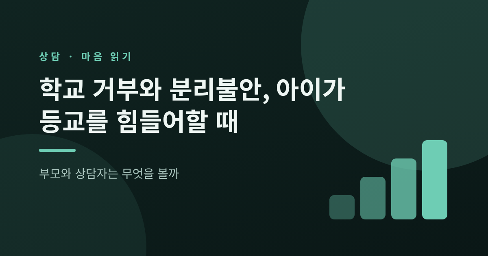
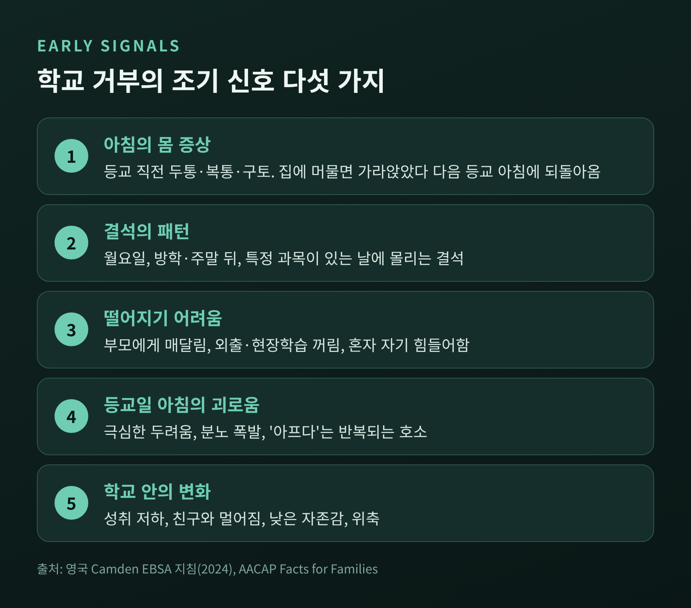
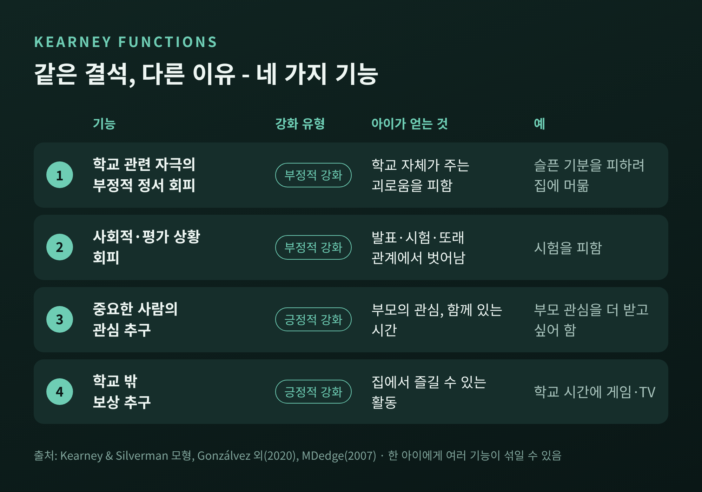
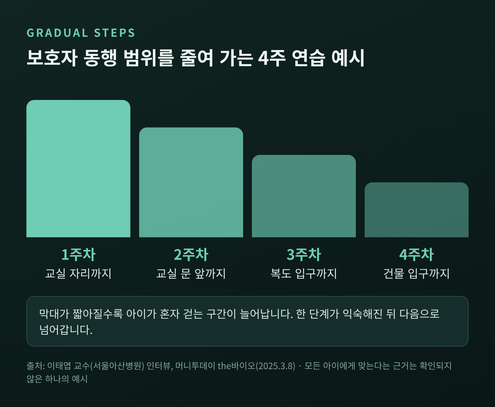
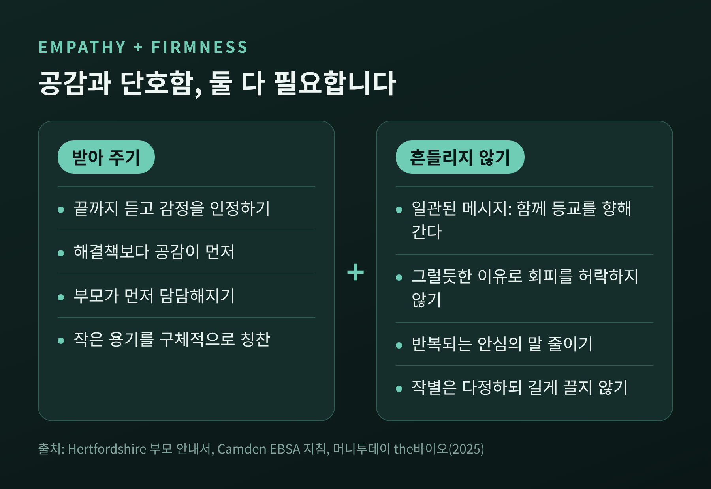
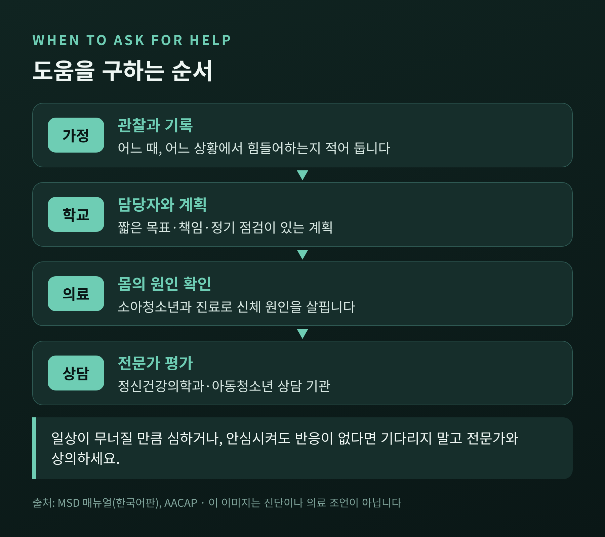

이 글은 일반적인 정보를 정리한 것이며 진단이나 의료 조언이 아닙니다. 사례는 여러 상황을 묶은 가상의 유형이고, 실제 인물이나 상담 내용이 아닙니다.
학교 거부는 아이가 정서적 고통 때문에 등교를 힘들어하는 상태를 말하며, 분리불안은 그 배경 가운데 하나입니다. 이번 글에서는 이 둘을 구분해 보고, 같은 결석 뒤에 어떤 이유가 숨어 있는지 살피는 방법과 부모의 대응 원칙을 정리해 보겠습니다. 핵심만 먼저 적으면, 등교 거부는 '의지의 문제'가 아니라 '이유를 읽어야 하는 신호'이며 이유에 따라 대응이 달라집니다.
학교 거부는 학교에 가는 일에서 비롯되는 정서적 고통 때문에 출석이 어려워지는 상태를 가리킵니다. 호주 연방의회 도서관의 보고서는 이를 학교 출석 문제의 한 유형으로 설명합니다. 부모가 결석 사실을 알고 있고, 아이를 등교시키려 애쓴다는 점이 특징입니다. 아이는 두려움이나 불안, 분노, 두통과 복통 같은 몸의 호소를 보입니다.
반면 무단결석은 허락 없이 빠지고, 대개 부모에게 숨긴다는 점에서 다릅니다.
영국의 일부 지방정부 지침은 용어 자체에도 신중합니다. '등교 거부자', '땡땡이' 같은 꼬리표가 문제를 아이 안에 두고, 마치 아이가 결석을 마음대로 정하는 것처럼 들리게 하기 때문입니다. 그래서 '정서적 이유로 인한 학교 회피(EBSA)'라는 넓은 표현을 씁니다. 출석이 줄어드는 경우뿐 아니라 특정 요일을 반복해 빠지는 패턴, 장기 결석을 모두 포함합니다.
미국소아청소년정신의학회(AACAP)는 학교 거부가 독립된 공식 진단명은 아니라고 밝힙니다. 여러 원인이 가능한 하나의 패턴이고, 가장 흔한 원인이 불안이라는 설명입니다.
얼마나 흔한지는 자료마다 다릅니다. 호주 의회 도서관과 AACAP는 대체로 1~5%, ADAA는 2~5%, 영국 지침은 1~2%를 제시합니다. 한국어판 MSD 매뉴얼에는 1~15%라는 넓은 범위도 나옵니다. 정의와 조사 대상이 달라서 생기는 차이로 보이며, 어느 한 숫자를 정답으로 삼기는 어렵습니다. 다만 시기에 대해서는 공통된 이야기가 있습니다. 초등학교 입학 무렵과 중학교로 올라가는 전환기에 몰린다는 점입니다.
AACAP에 따르면 어린 아이에서 가장 흔한 원인은 분리불안장애입니다. 부모에게 매달리고, 자신이나 부모가 다칠까 과하게 걱정하며, 혼자 자기를 힘들어하고, 학교에 보내려 하면 심한 떼를 쓰기도 합니다.
한국의 소아정신건강의학과 전문가(서울아산병원 이태엽 교수)는 분리불안이 12세 미만 아이에게 흔하고, 학교에 처음 다니는 7~8세 무렵 가장 자주 나타난다고 설명합니다. 부모와 다시 만나지 못할 것 같은 두려움 때문에 학교생활이 크게 어려울 때 분리불안장애로 진단한다는 것입니다. 배경으로는 타고난 예민한 기질, 불안이 높은 부모의 성향, 아이가 할 수 있는 일까지 대신해 주는 과보호, 불안정한 애착이 거론됩니다.
그러나 학교 거부가 곧 분리불안은 아닙니다. 같은 증상이라도 이유는 여러 갈래입니다. 큰 아이나 청소년에게서 처음 나타나는 학교 거부는 친구 문제, 사이버 괴롭힘을 포함한 괴롭힘, 우울 같은 마음의 어려움과 이어지는 경우가 더 많다고 AACAP는 적고 있습니다. 발견되지 않은 학습 어려움이나 자폐, ADHD가 숨어 있기도 합니다.

부모가 먼저 알아차릴 수 있는 신호도 있습니다. 영국 Camden 지침이 꼽은 조기 신호는 다음과 같습니다.
AACAP는 이런 몸의 증상이 집에 머물면 가라앉았다가 다음 등교 아침에 다시 나타나는 경향이 있다고 설명합니다. 다만 몸의 원인을 배제하는 일이 먼저이므로, 소아청소년과 진료를 포함한 평가를 권합니다.
상담 장면에서 자주 쓰는 틀이 Kearney와 Silverman이 제안한 기능 모형입니다. 행동의 겉모습이 아니라 '그 행동이 아이에게 무엇을 가져다주는가'를 묻습니다.

첫째는 학교와 관련된 자극이 일으키는 부정적 정서의 회피입니다. 둘째는 발표나 시험, 또래 관계처럼 평가받는 사회적 상황에서의 탈출입니다. 이 둘은 불쾌함을 피해 안도를 얻는 부정적 강화에 속합니다. 셋째는 부모 같은 중요한 사람의 관심을 얻으려는 경우이고, 넷째는 학교 밖의 즐거운 보상, 예컨대 게임이나 TV를 누리려는 경우입니다. 이 둘은 긍정적 강화입니다.
기능에 따라 함께 살펴야 할 문제도 달라집니다. 2007년 보도된 Kearney 연구팀의 발표를 정리한 자료에서는 첫째 기능에는 공황이나 범불안, 특정 공포, 우울이, 둘째에는 사회불안이, 셋째에는 분리불안이 연결되는 감별 후보로 나옵니다. 분리불안은 주로 '관심과 곁에 있음'을 구하는 쪽에 걸리고, 사회불안은 '평가받는 상황을 피하는' 쪽에 걸립니다.
예를 들어 보겠습니다. 월요일 아침마다 배가 아프다는 초등 3학년 아이가 있다고 해 봅시다. 수학 발표가 있는 날에만 아프다면 둘째 기능이 의심됩니다. 아침에 현관에서 부모의 옷자락을 놓지 못한다면 셋째, 곧 분리의 두려움이 더 가까울 수 있습니다. 어느 쪽이든 아이는 거짓말을 하는 것이 아니라 실제로 괴로운 것이고, 필요한 도움이 다릅니다.
여기에는 한계도 있습니다. 한 아이에게 여러 기능이 섞여 있는 경우가 흔합니다. 스페인 청소년 1,685명을 조사한 2020년 연구에서도 한 가지 유형으로 깔끔히 나뉘지 않는 '혼합형'이 13.1%로 나타났습니다. 이 수치는 일반 유병률이 아니라 해당 표본의 유형 분포입니다. 틀은 지도일 뿐, 아이를 대신 설명해 주지는 않습니다.
예전에는 '억지로라도 보내면 익숙해진다'는 말이 흔했습니다. 지금의 지침은 그 중간쯤을 가리킵니다. 목표는 되도록 빨리 학교로 돌아가는 것이고, 방법은 아이의 수준에 맞춰 단계를 나누는 것입니다.
한국어판 MSD 매뉴얼은 가능한 한 빨리 학교로 되돌리고 학업이 뒤처지지 않게 하라고 안내합니다. 호주 의회 도서관 보고서도 결석이 길어질수록 복귀가 어려워진다고 짚습니다. 결석을 이어 가는 회피는 오히려 두려움을 키우는 경향이 있다는 것이 영국 부모 안내서의 설명입니다.
영국 Camden 지침은 아이와 함께 '회피 위계'를 만들라고 권합니다. 가장 덜 두려운 상황부터 가장 두려운 상황까지 순서를 세우고, 한 단계를 익힌 뒤 다음으로 넘어갑니다. 단계마다 쓸 대처 방법과 지원을 정해 두고, 매주 출석을 점검하며, 6주가 지나도 호전이 적으면 계획을 다시 살핍니다.
분리불안에 대한 한국 전문가의 예시도 구체적입니다. 4주에 걸쳐 보호자가 동행하는 범위를 줄여 가는 방식입니다.

첫 주에는 교실 자리까지, 둘째 주에는 교실 문 앞까지, 셋째 주에는 복도 입구까지, 넷째 주에는 건물 입구까지 함께 갑니다. 부모 사진이나 인형 같은 애착 물건을 지니게 하는 것도 도움이 된다고 합니다. 휴대전화로 목소리를 듣고 싶어 하는 아이라면 통화 횟수를 미리 정하고, 연결되지 않을 때 마음을 달래는 방법도 약속해 두라는 조언이 붙습니다.
이 4단계가 모든 아이에게 맞는다는 근거는 확인하지 못했습니다. 하나의 예시로 받아들이시길 권합니다.
부모의 마음이 가장 흔들리는 순간은 현관 앞입니다. 영국 Hertfordshire 부모 안내서와 한국 전문가의 조언을 겹쳐 보면 방향은 비슷합니다. 아이의 감정은 충분히 받아 주되, 등교라는 방향은 흔들지 않는 것입니다.

받아 주는 쪽에서는 이렇게 합니다.
단호한 쪽에서는 이렇게 합니다.
한 가지 덧붙이면, 한국 전문가는 개근이 중요하던 시대와 달리 지각이나 조퇴가 어느 정도 괜찮다는 입장입니다. 단호함이 곧 완벽한 출석을 뜻하지는 않습니다. 왜 힘든지, 어떻게 하면 나아질지를 아이와 함께 고민하고 격려하는 자세가 필요합니다.
가정 안에서만 해결하려 하면 한계가 있습니다. 영국 Camden 지침은 부모, 학교 직원, 아이가 함께 일하라고 합니다. 관점이 다를 때는 '왜 이렇게 됐는가'를 따지기보다 '어떤 상황에서 일어나는가'에 초점을 두어 서로를 탓하지 않도록 하라는 조언도 있습니다.
학교가 할 수 있는 일도 구체적으로 제시됩니다. 따뜻한 인사, 역할 맡기기, 하루의 시작과 끝에 15분 정도 만나는 믿을 만한 어른, 결석 중에도 이어 가는 연락, 집에서 할 수 있는 학습 자료, 마음이 가라앉는 안전한 공간 등입니다. 부모는 학교의 지정 담당자가 누구인지 확인하고, 짧은 목표와 책임, 정기 점검이 들어간 계획을 함께 짜 보시면 좋겠습니다.
호주 의회 도서관 보고서는 벌금이나 법원 명령 같은 처벌적 접근이 출석을 개선한다는 근거가 없다고 정리합니다. 지지, 꾸준한 지켜봄, 분명한 경계 같은 긍정적인 가족 과정이 더 나은 출석과 연결된다고 합니다.
한국어판 MSD 매뉴얼은 학교 회피가 일상 활동을 방해할 만큼 심하거나, 부모나 교사가 안심시켜도 반응이 없을 때 전문가를 찾으라고 안내합니다. AACAP는 도움을 빨리 받을수록 대체로 경과가 좋다고 말합니다. 큰 아이나 청소년에게서 처음 나타난 거부는 더 면밀한 평가를 권합니다.
치료 쪽에서는 인지행동치료(CBT)가 가장 많이 연구된 접근입니다. 다만 근거가 확정적이라고 말하기는 어렵습니다. 2015년 캠벨 체계적 문헌고찰은 8개 연구, 435명을 분석했습니다. CBT는 출석에서 유의한 개선이 있었지만 불안 수준에서는 유의한 효과가 확인되지 않았고, 저자들은 근거가 중간 수준이며 연구가 적어 CBT를 치료의 선택지로 확립하기엔 불충분하다고 평가했습니다. 더 오래 추적한 연구가 필요하다는 뜻입니다.

놀이치료나 가족치료, 약물 사용 여부는 아이의 상태를 직접 본 전문가가 판단할 일입니다. 이 글만으로 정하지 않으시길 바랍니다. 이 글은 진단이나 치료를 대신하지 않으며, 아이의 어려움이 이어진다면 소아청소년과나 정신건강의학과, 아동·청소년 상담 기관 같은 전문가와 상의하시길 권합니다.
정리하면 이렇습니다.
학교 가기를 힘들어하는 아이 앞에서 부모와 상담자가 처음 할 일은 설득이 아니라 '읽기'입니다. 분리의 두려움인지, 평가받는 자리의 두려움인지, 다른 무언가가 있는지를 보면 다음 걸음이 보입니다.
"등교 거부는 고집이 아니라, 아직 말이 되지 못한 두려움일 수 있습니다."
아이가 한 칸을 올라서는 날, 그 곁에 있었던 어른이 누구였는지는 오래 남을 것입니다.